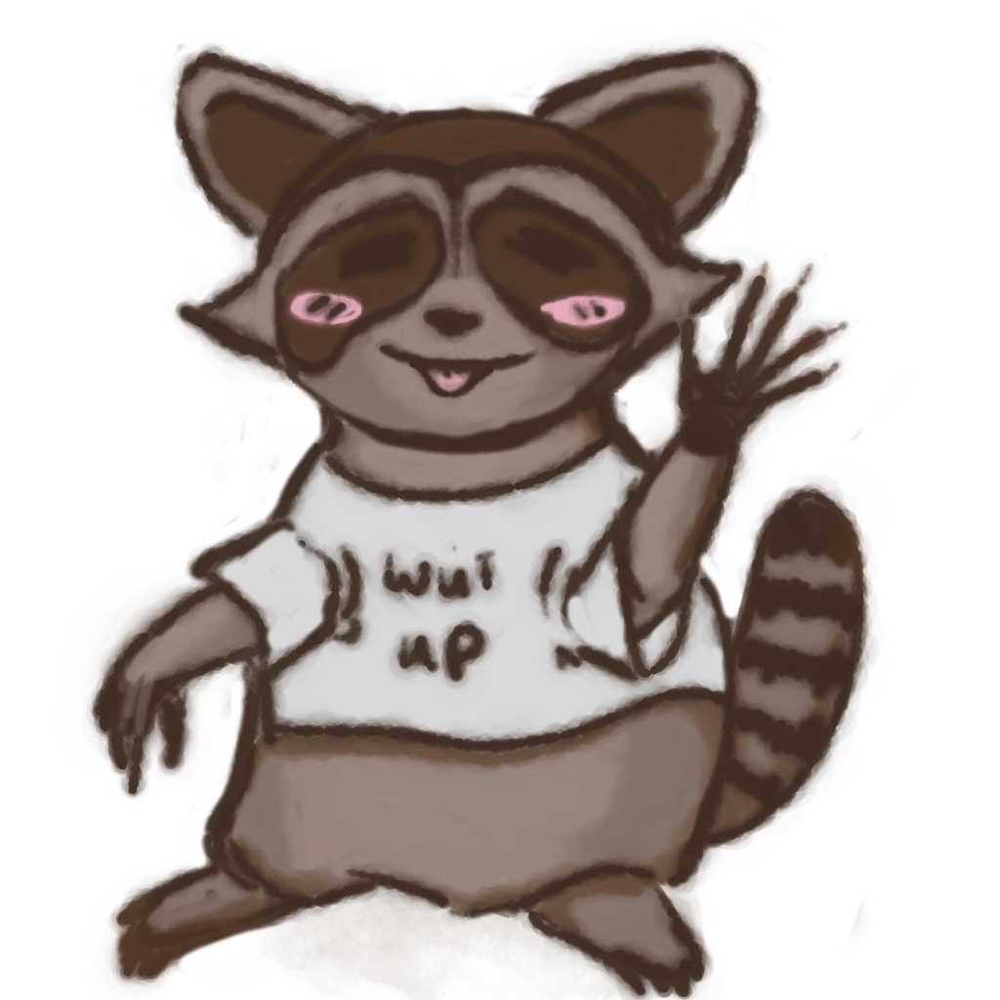

You can call me Sans Kisby.
No, it's not a reference to undertale (although i do like that game).
Pronouns: She/Him/any
I grew up in Greenville SC, and went to College at USC, Columbia, SC. I got a bachelor's degree in Media Arts and a Cognate in fine arts and German. I now live in Bloomington, IN with my wonderful spouse and two Cats.
I enjoy almost any craft including but not limited to; sewing, embroidery, crochet, knitting, carving, carpentry, leatherworking, felting, etc.
My main goals in life are to have a baby and to build a house. As far as careers go... it's a bit of an open question but I am narrowing it down as I go.
So far it's between, puzzle artist, animator, and illustrator for either standalone pieces or Comics.
If you like my style feel free to check out my rates and email me for commissons.
